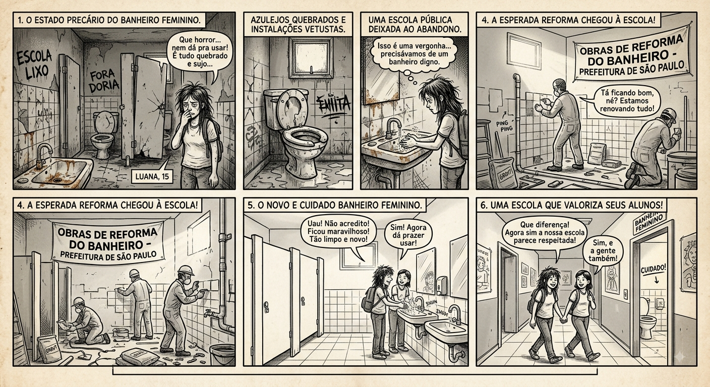
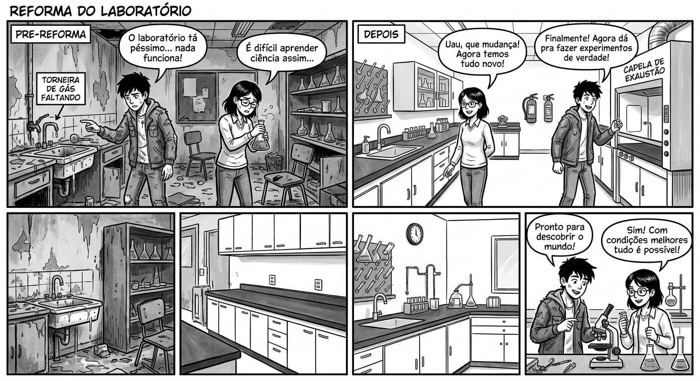
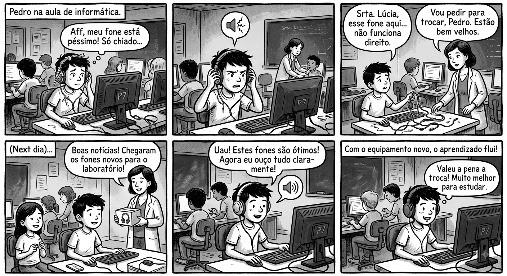
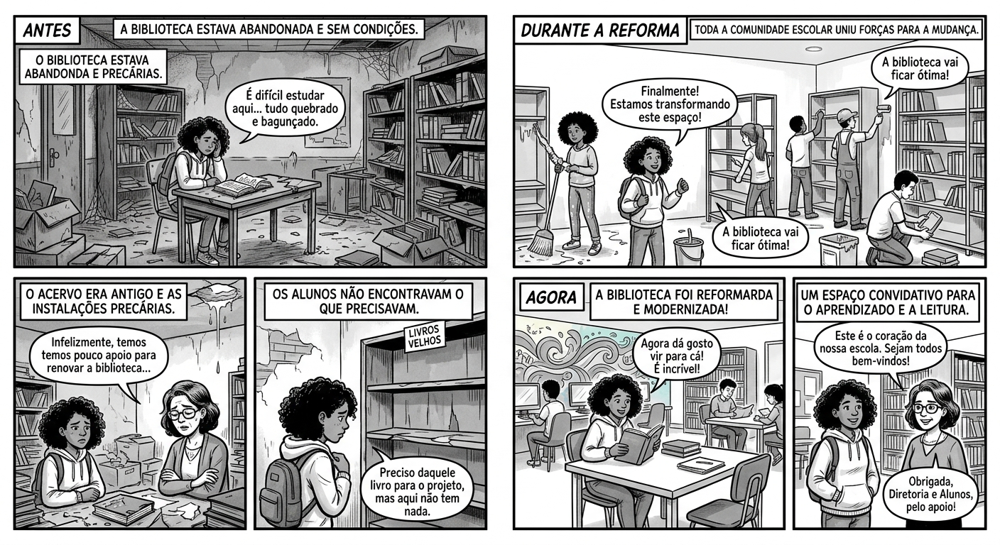
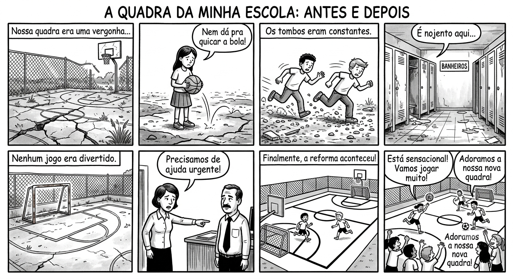

"A voz dos alunos é essencial para construir uma escola mais participativa, acolhedora e preparada para transformar ideias em ações."
O QUE PODEMOS FAZER PARA TORNAR NOSSA ESCOLA AINDA MELHOR?
VENTILADORES

"A voz dos alunos e a ação da gestão caminham juntas para garantir salas de aula seguras, confortáveis e prontas para um novo ano letivo!"
BANHEIROS

"A verdadeira sabedoria está em reconhecer a própria ignorância, mas também em ter a coragem de buscar o conhecimento que ilumina o caminho."
LABORATÓRIO DE QUÍMICA

"Investir na infraestrutura dos nossos laboratórios é transformar o aprendizado teórico em descobertas práticas e motivar nossos alunos a irem mais longe na ciência!"
FONES

"A renovação dos equipamentos de informática melhora a concentração e o aprendizado dos alunos."
BIBLIOTECA

"A revitalização da biblioteca garante aos alunos um espaço moderno e acolhedor para a leitura e o aprendizado."
QUADRA

"Uma quadra renovada impulsiona não apenas o esporte, mas a união e o desenvolvimento integral de toda a comunidade escolar."
O cuidado com o patrimônio escolar é responsabilidade de todos os estudantes e funcionários, os bens duráveis são importantes para o desenvolvimento dos estudantes e gera um ambiente melhor para todos os envolvidos.